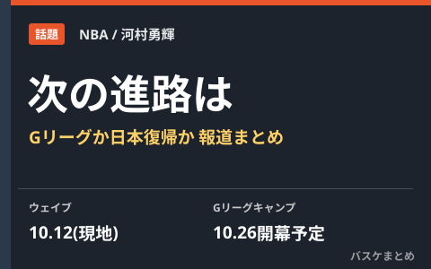

河村勇輝の次なる進路に注目 Gリーグか日本復帰か、ウェイブ後の報道まとめ

NBAロサンゼルス・クリッパーズから契約解除（ウェイブ）された河村勇輝選手。NBA挑戦3年目での開幕ロスター入りはならなかったものの、その後の報道では今後の進路にファンやメディアの関心が集まっています。タイロン・ルーHCが擁護のコメントを出したこと、契約に下部Gリーグチームへの加入条項があったとされること、そして日本のファンの間でB.PREMIER復帰を望む声が出ていることなど、ウェイブ後に報じられた動きを整理します。
ルーHC「身長や体格のせいで正当な評価を受けていない」
クリッパーズのタイロン・ルーHCは、河村選手について身長や体格の面でNBAでは正当な評価を受けにくい状況があると述べ、今回のウェイブはチームの編成上の判断だったと説明したと報じられています。172cmの河村選手にとって、サイズやフィジカルの強さが重視される現代NBAで出場機会を得る難しさが、改めて浮き彫りになった形です。
契約には下部Gリーグチームへの加入条項、トレーニングキャンプは10月26日から
報道によると、河村選手が結んでいた「エグジビット10」契約には、クリッパーズ傘下のGリーグチーム・サンディエゴ・クリッパーズへの加入条項が含まれていたとされ、他球団からの新たな契約がなければGリーグでプレーしながらNBA再昇格を目指す可能性が有力視されています。Gリーグのトレーニングキャンプは10月26日に開幕する見通しと伝えられています。ただし、サンディエゴ入りを含めた今後の所属はこの時点で公式発表されておらず、確定情報ではありません。
日本では「B.PREMIERで見たい」の声、八村塁もコメント
日本のメディアでは、ウェイブを受けて今季開幕したB.PREMIERへの復帰を望む声が出ていると報じられました。同じクリッパーズでプレーする八村塁選手も、河村選手の今後の決断について言及したとされています。河村選手自身はNBA3年目まで挑戦を続けており、Gリーグ・メンフィス・ハッスルでは先発ポイントガードとして平均2桁得点・2桁近いアシストを記録するなど、下部リーグでの実績は示してきました。今後どの道を選ぶにしても、注目度の高い決断になりそうです。
Q. 河村選手の次の所属はいつ分かる？
A. 2026年10月16日時点では公式発表はありません。Gリーグのトレーニングキャンプ開幕（10月26日と報じられています）前後に動きがあるか、最新情報はクリッパーズ・Gリーグまたは河村選手本人の発表でご確認ください。
出典：スポーツ報知「河村勇輝は「身長や体格のせいで正当な評価を受けていない」ルーHCが擁護 クビは球団判断」（Yahoo!ニュース配信）／東京スポーツ「河村勇輝 ＮＢＡクリッパーズ契約解除で日本復帰待望論」（Yahoo!ニュース配信）／バスケットボールZINE「クリッパーズが河村勇輝をウェイブ 傘下サンディエゴからNBA再昇格を目指す見込み」ほか
https://news.yahoo.co.jp/articles/6352d53598cb955c0920ba2baa1f70ad27fe24a6
https://news.yahoo.co.jp/articles/f97015fe164f6730f77032f40e4428a30e360378
https://www.basketball-zine.com/article/detail/118046